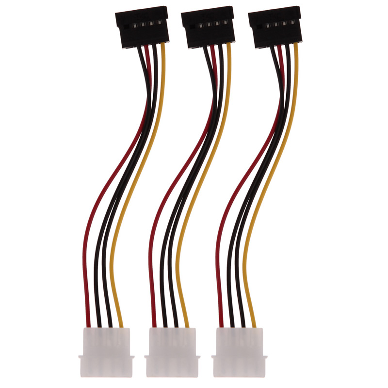

Les systèmes de fichiers du disque dur
Hard Drive Mechanic
Bienvenue sur le nouveau site intitulé "Hard Drive Mechanic", ce site nous permet d'apprendre le fonctionnement d'un disque dur interne,
son système de fichiers, son type...
Accueil
Qu'est ce qu'un disque dur ?
Type de disque dur
Fonctionnement du disque dur
Système de fichiers du disque dur
Les partitions
Voici les systèmes de fichiers du disque dur
FAT (File Allocation Table)
NTFS (New Technology File System)
Ext (Extended file system)

Hard Drive Mechanic, site sur le fonctionnement des disques durs - Tous droits réservés. Copyright
Mentions Légales
Contactez
Site Créé par Sébastien BUNEL